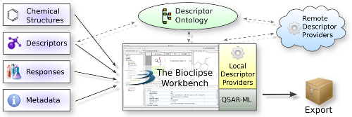

Blue Obelisk Descriptor Ontology
The Blue Obelisk Descriptor Ontology is a dictionary which describes descriptors
used in quantitative structure-activity relationship (QSAR) programs. For more information, see the page
QSAR.sf.net Descriptor Dictionary.

Overview of architecture for QSAR-ML. Data sets for QSAR by are set up by importing chemical structures,
selecting descriptors from the Blue Obelisk Descriptor Ontology,
cherry-picking local and remote descriptor providers,
adding responses and metadata, and then building/exporting the complete data set.